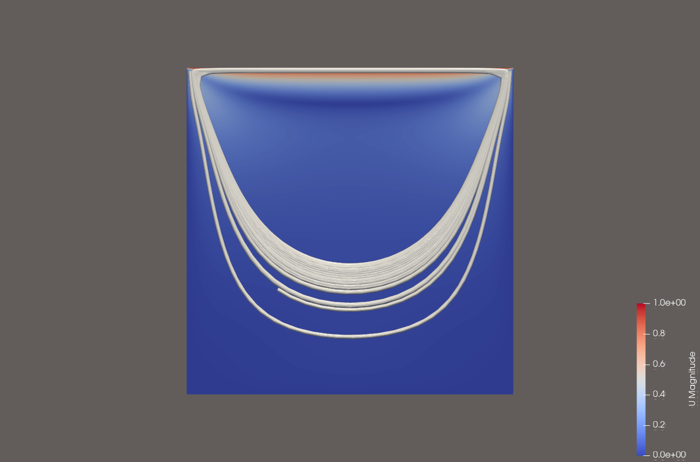
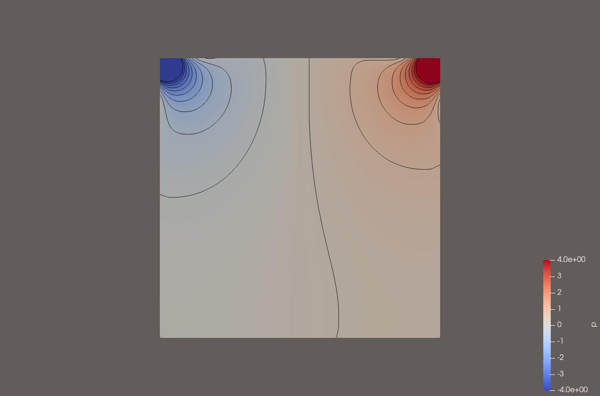

Solver de pressão do OpenFOAM na GPU com CUDA
Passo a passo testado de ponta a ponta: compilar o OpenFOAM-14 do zero, acoplar o AMGX da NVIDIA como solver de pressão via fvSolution, e rodar um caso de verdade na GPU — sem alterar uma linha do código-fonte do Foundation.

Pré-requisitos
Confirme a GPU e a distro antes de começar — economiza retrabalho depois.
$ nvidia-smi --query-gpu=name,compute_cap,driver_version --format=csv
# name, compute_cap, driver_version
# NVIDIA GeForce RTX 4050 Laptop GPU, 8.9, 596.08compute_cap (ex: 8.9) — vira sm_89 mais adiante. Usar a arquitetura errada é o erro mais comum deste tutorial (§9).CUDA Toolkit (repositório WSL-Ubuntu)
Use o repositório wsl-ubuntu específico — o pacote genérico do Ubuntu tenta instalar o driver Linux, que conflita com o driver do Windows que já faz a ponte pro WSL.
$ wget https://developer.download.nvidia.com/compute/cuda/repos/wsl-ubuntu/x86_64/cuda-keyring_1.1-1_all.deb
$ sudo dpkg -i cuda-keyring_1.1-1_all.deb
$ sudo apt-get update
$ sudo apt-get install -y cuda-toolkit-13-2$ export PATH=/usr/local/cuda/bin:$PATH
$ nvcc --version
# Cuda compilation tools, release 13.2, V13.2.86nvidia-cuda-toolkit do Ubuntu instalado (ele vem com um nvcc antigo, versão 11.5, em /usr/bin/nvcc), ele entra na frente do PATH. Verifique com which nvcc — se apontar para /usr/bin/nvcc, exporte o PATH acima antes de qualquer build.Compilar o OpenFOAM-14
A pasta local precisa se chamar exatamente OpenFOAM-<versão> — o etc/bashrc deriva o caminho disso, não do nome do diretório onde você clonou.
$ mkdir -p ~/dev && cd ~/dev
$ git clone https://github.com/OpenFOAM/OpenFOAM-14.git
$ sudo apt-get install -y build-essential flex bison cmake git \
zlib1g-dev libboost-system-dev libboost-thread-dev \
libopenmpi-dev openmpi-bin libreadline-dev libncurses-dev \
libxt-dev rpm libscotch-dev libptscotch-dev$ cd ~/dev/OpenFOAM-14
$ source etc/bashrc
$ ./Allwmake -j $(( $(nproc) / 2 )) # limite a RAM, nao use todos os nucleos de uma vezls $FOAM_APPBIN | wc -l deve mostrar ~145 binários (solvers + utilitários). Erros em PVReaders/ParaView são esperados e inofensivos se você não instalou as libs de visualização.Compilar a AMGX (NVIDIA)
É a biblioteca que faz o solve de verdade na GPU — um multigrid algébrico em CUDA puro, sem depender do OpenFOAM.
$ cd ~/dev && git clone --recursive https://github.com/NVIDIA/AMGX.git
$ cd AMGX && mkdir build && cd build
$ cmake -DCMAKE_CUDA_COMPILER=/usr/local/cuda/bin/nvcc \
-DCMAKE_CUDA_ARCHITECTURES="89" \
-DCMAKE_BUILD_TYPE=Release ../
$ make -j4 all # -j4, nao -j$(nproc) - evita estourar a RAM do WSL89 pelo compute_cap da sua GPU, sem o ponto (8.9 → 89, 7.5 → 75, 8.6 → 86...).Resultado esperado: build/libamgxsh.so e build/libamgx.a.
Compilar o foam2csr
Converte a matriz LDU do OpenFOAM para o formato CSR que a AMGX entende. Usa tipos do PETSc internamente — só como infraestrutura, não para resolver nada.
$ sudo apt-get install -y libpetsc-real-dev
$ cd ~/dev && git clone https://github.com/mattmartineau/foam2csr.gitO pacote do PETSc no Ubuntu usa nomes diferentes dos que o código espera. Resolva com links simbólicos próprios — sem mexer no sistema:
$ mkdir -p ~/dev/compat/lib
$ ln -s /usr/lib/x86_64-linux-gnu/libtrilinos_zoltan.so ~/dev/compat/lib/libzoltan.so
$ ln -s /usr/lib/petscdir/petsc3.15/x86_64-linux-gnu-real/lib/libpetsc_real.so \
~/dev/compat/lib/libpetsc.soDois ajustes de uma linha no código clonado (nenhum dos dois é código do OpenFOAM Foundation):
# Make/options linha 7 — GNU Make nao entende comentario estilo C
$ sed -i 's|/\* Failsafe.*\*/|# Failsafe|' Make/options
# Make/nvcc — arquitetura e padrao C++ desatualizados
$ sed -i 's/NVARCH = 70/NVARCH = 89/; s/c++14/c++17/' Make/nvcc$ export AMGX_INC=~/dev/AMGX/include AMGX_LIB=~/dev/AMGX/build
$ export CUBROOT=/usr/local/cuda/targets/x86_64-linux/include/cccl
$ export PETSC_INC=/usr/lib/petscdir/petsc3.15/x86_64-linux-gnu-real/include
$ export PETSC_LIB_DIR=~/dev/compat/lib
$ ./Allwmakelibfoam2csr.so em $FOAM_USER_LIBBIN.Portar e compilar o amgx4Foam
Este é o wrapper que registra amgx como um lduMatrix::solver de verdade dentro do OpenFOAM. O fork disponível na comunidade foi escrito para uma API mais antiga — precisa de 4 ajustes pra compilar na v14.
$ cd ~/dev && git clone https://github.com/maorz1998/amgx4foam.git| Arquivo | Problema | Ajuste |
|---|---|---|
| linearSolverContextTable.H | v14 renomeou MeshObject | → DemandDrivenMeshObject<…, DeletableMeshObject, …> |
| amgxSolver.C | header removido, não usado | remove #include cyclicAMILduInterface.H |
| amgxSolver.C / *.H | v14 renomeou o método | thisDb() → db() |
| amgxLinearSolverContext.H | PETSc nunca inicializado | + PetscInitializeNoArguments() |
-I/usr/local/cuda-11.6/include por -I/usr/local/cuda/include em Make/options, e -lfoam_csr por -lfoam2csr (nome real da lib do passo anterior).$ export FOAM2CSR_INC=~/dev/foam2csr/src
$ export FOAM2CSR_LIB=$FOAM_USER_LIBBIN
$ cd ~/dev/amgx4foam && ./AllwmakelibamgxFoam.so em $FOAM_USER_LIBBIN — sem dependências quebradas (ldd libamgxFoam.so | grep "not found" deve voltar vazio).Configurar um caso para usar a GPU
Três arquivos num caso qualquer. Nenhum é código — são só dicionários de configuração do próprio OpenFOAM.
system/controlDict — carrega a biblioteca:
libs ("libamgxFoam.so");system/fvSolution — troca o solver do campo p:
p
{
solver amgx;
amgx
{
dict p;
caching { matrix { update always; } preconditioner { update always; } }
}
tolerance 1e-06;
relTol 0.05;
}system/amgxpOptions — config nativa da AMGX (o nome segue o padrão amgx + dict + Options):
{
"config_version": 2,
"solver": {
"solver": "PCG",
"preconditioner": { "solver": "AMG", "algorithm": "AGGREGATION", ... },
"tolerance": 1e-06,
"store_res_history": 1
}
}tolerance e o relTol do fvSolution são ignorados pelo amgx4Foam. Para casos SIMPLE em regime permanente, ajuste "tolerance" aqui para o mesmo valor do relTol (ex.: 0.1). Detalhes no §9.store_res_history: 1 é obrigatório — sem ele a AMGX converge normalmente mas trava ao tentar devolver o resíduo pro OpenFOAM reportar.Caso completo: prove a capacidade numérica
Antes de confiar o motorBike (3,2 milhões de células, pode levar horas) pra GPU, rode isto — o tutorial cavity padrão do OpenFOAM, pequeno o bastante pra terminar em segundos. A ideia não é velocidade aqui: é provar que o resultado bate com a referência CPU antes de confiar em algo maior.
1. Prepare os dois casos (mesma malha, só o solver de p muda):
$ mkdir -p ~/runs && cd ~/runs
$ cp -r $FOAM_TUTORIALS/legacy/incompressible/icoFoam/cavity/cavity cavity_cpu
$ cp -r cavity_cpu cavity_gpu
$ cd cavity_cpu && blockMesh && cd ..No cavity_gpu, aplique os três arquivos do §7 (libs no controlDict, solver amgx; no fvSolution, e o system/amgxpOptions), depois decomponha os dois em 2 subdomínios (numberOfSubdomains 2; + decomposePar) — a GPU exige -parallel, então rode os dois casos do mesmo jeito para a comparação ser justa.
2. Rode os dois:
$ cd ~/runs/cavity_cpu && mpirun -np 2 icoFoam -parallel
$ cd ~/runs/cavity_gpu && mpirun -np 2 icoFoam -parallelAMGx: Solving for p, Initial residual = 1.40477e-15, Final residual = 5.2475e-19, No Iterations 28
time step continuity errors : sum local = 1.56388e-16, global = -3.53206e-20
ExecutionTime = 9.5838 s ClockTime = 9 sAMGx: (em vez de DICPCG:) confirma que o solve de pressão rodou na GPU.3. Compare o campo de pressão final — isto é a prova:
$ reconstructPar -case cavity_cpu && reconstructPar -case cavity_gpu
$ diff cavity_cpu/0.5/p cavity_gpu/0.5/p | head| Build | Resíduo final de p | Resultado |
|---|---|---|
| GCC, CPU (DICPCG) | 8.638e-07 | referência |
| Intel oneAPI, CPU (DICPCG) | 8.638e-07 | idêntico ao GCC, bit-a-bit |
| AMGX, GPU (PCG+AMG) | 5.248e-19 | convergiu; campo final ~1e-4 do CPU |
O diff não vai dar vazio — e não deveria. Métodos iterativos diferentes (agregação AMG vs. DIC) convergem pra mesma física por caminhos diferentes, ambos dentro da tolerância configurada (1e-6). O que importa é a ordem de grandeza da diferença, não zero.
4. Veja o que você acabou de calcular (ParaView, campo de 0.5/):

motorBike (malha via snappyHexMesh, centenas de milhares a milhões de células — mesmos três arquivos do §7, só trocando solver GAMG; por solver amgx; no bloco de p do fvSolution padrão do tutorial). É nessa escala que a GPU realmente compensa o overhead de inicialização — veja o comparativo no relatório completo.Antes de desistir da GPU
Com a configuração ingênua, a GPU pode sair mais lenta que a CPU, ou travar no meio da rodada. Cada item abaixo aconteceu de verdade durante os testes deste tutorial, com o número medido. Nenhum deles significa que a GPU não serve: significa que ela foi usada fora das condições em que compensa.
| Armadilha | O que medimos | Como evitar |
|---|---|---|
Tolerância do fvSolution ignorada |
motorBike: com relTol 0.1 no fvSolution, o GAMG na CPU parou em 2 iterações por solve. A AMGX fez 41 iterações e foi até resíduo 2e-08, porque seguiu o critério do JSON (redução de 1e-6). O código do amgx4Foam e do foam2csr não lê tolerance nem relTol. |
Coloque o critério de parada no amgxpOptions: "convergence": "RELATIVE_INI" com "tolerance": 0.1 reproduz o relTol 0.1. Sem isso a GPU faz muito mais trabalho que a CPU e a comparação fica injusta. |
| Malha pequena | cavity, 40 mil células, 10 passos: CPU 2,3 s × GPU 6,4 s | O custo fixo de montar o problema na GPU domina em malhas pequenas. Avalie a GPU só em malhas grandes (centenas de milhares de células para cima). Use a cavity apenas para validar o resultado, nunca para medir velocidade. |
| Reconstruir o AMG a cada iteração | Na cavity, o setup já era 38% do tempo de cada solve. Com o reaproveitamento ligado, o setup do motorBike caiu de 0,49 s para 0,15 s por solve. | Adicione "structure_reuse_levels": -1 no bloco preconditioner do amgxpOptions. A matriz continua sendo atualizada em toda iteração; só o padrão de agregação do multigrid é reaproveitado. |
Cache periodic do amgx4Foam |
Leitura do código: nesse modo a matriz deixa de ser atualizada nas iterações intermediárias, não só o precondicionador. | Não use periodic, adaptive nem never. A GPU resolveria a pressão de uma iteração anterior e o resultado ficaria fisicamente errado, mesmo convergindo. Mantenha update always; e use o reaproveitamento da linha acima. |
| Processos MPI demais numa GPU só | Com 8 processos, cada um abre o próprio contexto CUDA na mesma placa de 6 GB. | Comece com 2 a 4 processos por GPU. Mais processos ajudam a parte que roda na CPU, mas disputam a memória da placa. |
| Outros programas usando a GPU | motorBike caiu na iteração 289 de 500 com Cuda failure: 'unknown error' e Out of resource. A AMGX estava estável em 3,0 GB; o ParaView e o desktop do Windows ocupavam o resto da placa. |
Feche ParaView, jogos e abas pesadas do navegador antes de uma rodada longa. Em notebook, a mesma GPU também desenha a tela. Confira a memória livre com nvidia-smi antes de começar. |
| Memória do WSL2 alta demais | Com 12 GB de 15,7 GB para o WSL, o Windows ficou com 0,1 GB livre e reiniciou a máquina virtual, matando um build em andamento. | Deixe pelo menos metade da RAM para o Windows no .wslconfig (ex.: memory=8GB numa máquina de 16 GB) e compile com make -j4. |
O que esperar: medido no motorBike
3,2 M células, 4 processos, foamRun com incompressibleFluid (SIMPLE), tempo médio das iterações 10 a 100.
| Configuração | s / iteração | Iterações do solver de p | Cd (it. 100) |
|---|---|---|---|
| Primeira tentativa: GPU com tolerância do JSON (1e-6), 8 processos | 3,7 | 41 | — |
| CPU, GAMG | 2,550 | 2,0 | 0,7210 |
| GPU, tolerância igualada (0,1) | 2,522 | 1,4 | 0,7214 |
| GPU, tolerância igualada + reaproveitamento do AMG | 2,478 | 1,4 | 0,7200 |
Com a configuração certa, a GPU empata com a CPU e o resultado físico é o mesmo. Ela não fica muito à frente porque, nesse caso, o solve de pressão é só 0,26 s de cada iteração de 2,48 s (cerca de 10%). Os outros 90% são as equações de velocidade e turbulência, a montagem das matrizes e o pós-processamento, que continuam na CPU. Mesmo com um solve de pressão instantâneo, o ganho máximo seria de uns 12%.
pFinal com relTol 0, em malhas grandes. Antes de investir num caso, olhe o log da CPU: se o GAMG faz só 1 a 3 iterações por solve, a pressão já é barata e a GPU tem pouco a ganhar.relTol, use 2 a 4 processos, reaproveite a estrutura do AMG e deixe a GPU livre durante a rodada. Só depois disso compare com a CPU.Solução de problemas
| Sintoma | Causa |
|---|---|
Unsupported gpu architecture 'compute_70' | NVARCH/CMAKE_CUDA_ARCHITECTURES não bate com o compute_cap real da GPU (§1) |
Unknown symmetric matrix solver amgx | libs ("libamgxFoam.so"); faltando ou mal posicionado no controlDict |
MPI_Get_processor_name() called before MPI_INIT | rodou sem mpirun -parallel — veja §8 |
attempt to run parallel on 1 processor | o OpenFOAM recusa -parallel com numberOfSubdomains 1 — use pelo menos 2 |
Segfault dentro de PetscVFPrintfDefault | PETSc não inicializado — confirme o ajuste do §6 |
missing separator num Make/options ou Make/files | comentário em estilo C (/* */) onde o GNU Make só aceita # |
Cuda failure: 'unknown error' seguido de Out of resource no meio da rodada | a memória da GPU acabou: outros programas usando a placa ou processos MPI demais. Veja §9 |
cannot find file ".../processor0/0/p" | a pasta 0/ da raiz do caso foi apagada antes do decomposePar — restaure as condições iniciais antes de decompor |